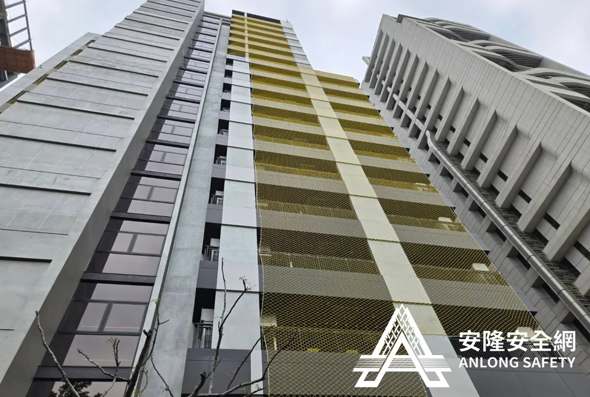
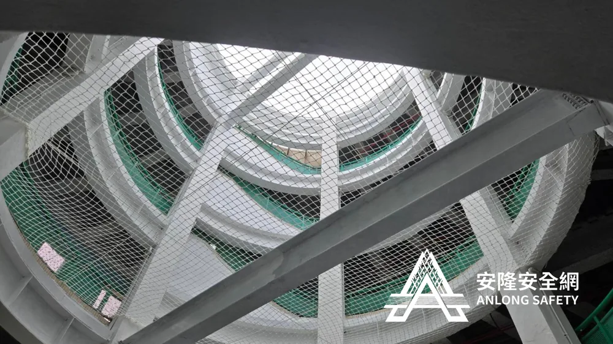
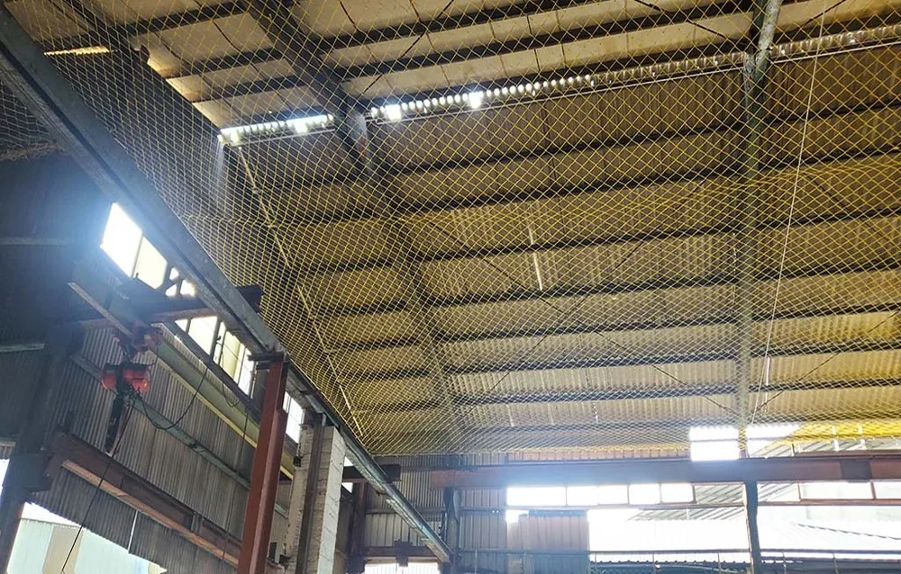
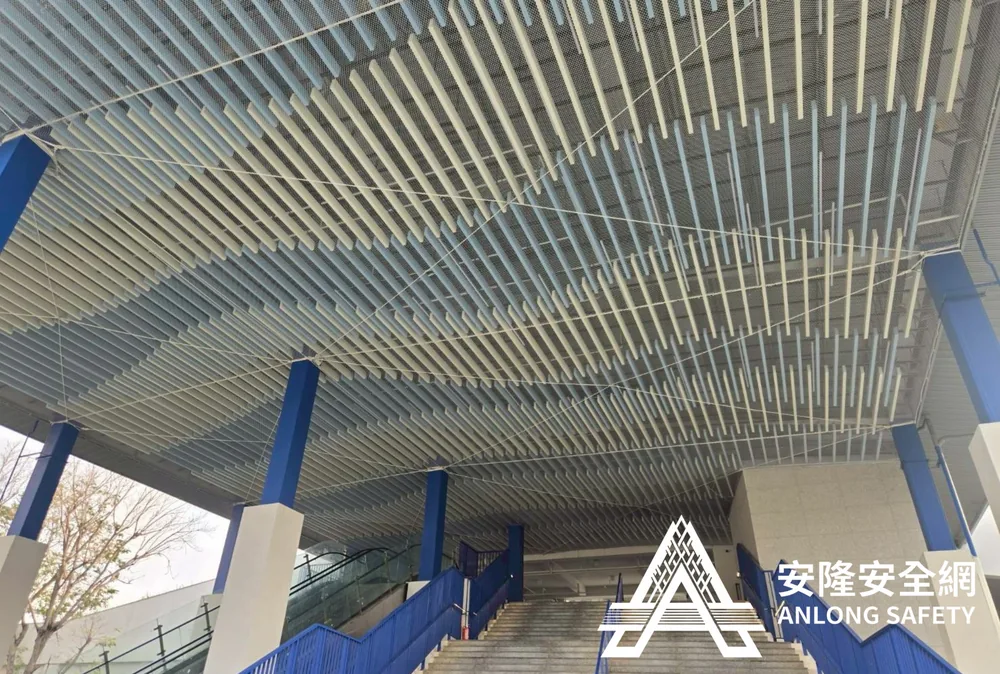
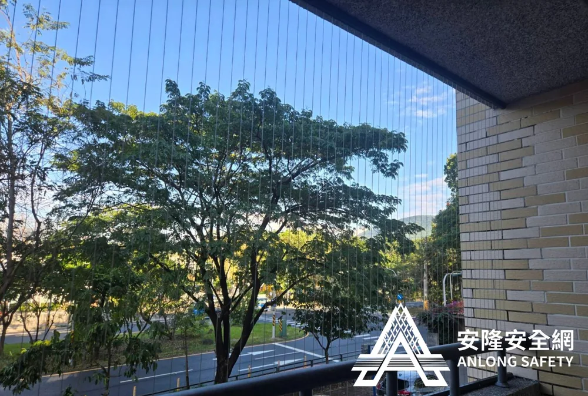

產品型錄
從工程級到住宅用，24 項專業安全網一站找齊。點擊任一產品查看完整規格、應用場景與相關案例。

勞安規範工地防墜安全網
符合勞動部勞工安全衛生規範，攔截高度 ≤ 7 公尺。採用高張力特多龍材質，可承受 100kg 以上的衝擊負載，...
查看詳情 →
專業安裝大樓天井防墜網
依規定 7 米高度安裝一件，承載式設計，垂墜量精準控制 20%–25%。專為大樓中庭、樓梯間天井設計，可選鋼索...
查看詳情 →球場運動攔截網
棒球、網球、羽球場專用，活動式可收納設計。網目尺寸依運動類型客製，附設專用滑軌系統，使用後可快速收起。...
查看詳情 →風雨球場防護網
高耐候特多龍材質，抗 UV 防潑水。可承受 12 級強風，適合台灣海島型氣候。戶外保固一年，校園與公園專用。...
查看詳情 →太陽能板防護網
防止鳥類築巢、異物掉落，保護光電系統。不影響光電效能，可大幅延長太陽能板壽命，光電廠與住宅光電皆適用。...
查看詳情 →
工業級公司廠區安全網
物架安全網、倉儲防護網，工業級線徑訂製。可依倉儲規範裝設防墜層、防落物層，符合 ISO 工安要求。...
查看詳情 →
農用農業防鳥網
果園、雞舍、農場專用，多種網目尺寸選擇。可阻擋麻雀、白鷺鷥等常見害鳥，不傷害鳥類本身，環境友善。...
查看詳情 →遮光網
針織 50–80%、平織 50–95% 遮光率，多種規格。安裝後室內可降溫約 2 度，節能省電，可選固定式或活...
查看詳情 →兒童遊戲場防護網
幼兒園、公園遊樂設施專用，符合兒童安全標準。色彩鮮豔、邊角圓滑、無毒材質，讓孩子玩得安全也玩得開心。...
查看詳情 →隔離阻擋用安全網
人車分流、區域隔離、活動分區用網。可快速架設、收納，活動式設計適合短期工程與大型活動。...
查看詳情 →人類攀爬網
兒童遊樂場攀爬網，正方形網目設計。承載多人同時攀爬，繩結結構安全經過認證，是體能訓練的最佳選擇。...
查看詳情 →防磁磚掉落網
老舊大樓外牆磁磚防護，保護行人安全。透明或細網目設計，不影響大樓外觀，是都市更新前的必備防護。...
查看詳情 →樓梯防墜安全網
透天樓梯標配，5mm 線徑 10×10cm 網目，符合國家標準。可選擇 11 種顏色搭配居家風格，安裝快速、整...
查看詳情 →L 型樓梯安全網
依樓梯形狀客製，多色可選，安裝整潔美觀。轉角處特殊處理，線條俐落不雜亂，是 L 型樓梯天井的完美解決方案。...
查看詳情 →口字型樓梯安全網
中央天井包覆式設計，全周防護無死角。適合中庭式透天厝、別墅、樓中樓挑高空間。...
查看詳情 →三角型樓梯安全網
特殊樓梯結構訂製，精準貼合不留縫隙。提供現場測量服務，誤差 ≤ 1cm，是不規則樓梯的唯一解。...
查看詳情 →
不影響採光隱形鐵窗
2mm 白鐵鋼索包 PVC，防鳥 2.5cm／防人 5cm 間隔。不影響採光、視野與外觀，社區規約友善，是現代...
查看詳情 →窗戶防墜網
兒童墜落防護，安裝快速不破壞窗框。可拆卸式設計，搬家時可帶走，是租屋族與小資家庭的好選擇。...
查看詳情 →頂樓陽台防墜網
陽台、頂樓加強防護，貓咪友善不外逃。專為毛孩家庭設計，網目密度防止頭部卡住，11 色可選不影響景觀。...
查看詳情 →創意彩色安全網
白／黑／藍／紫／咖／綠／紅／橘／黃多色搭配。可拼接漸層、條紋等創意圖案，把防護變成居家裝飾的一部分。...
查看詳情 →手扶梯欄桿網
4mm 線徑 7×7cm 網目，符合大樓最新管理規定。每支欄桿上下打結，單線斷不全散，是社區大樓必裝項目。...
查看詳情 →電扶梯安全網
商場、車站電扶梯側邊防護。專用安裝結構，不干擾電扶梯運作，符合公共安全法規。...
查看詳情 →水池安全防護網
景觀池、魚池防墜，兒童寵物雙重保障。可承重式設計，承載成人重量，是有水景住宅的必備設施。...
查看詳情 →防撞條
牆角、柱子防撞，居家安全細節。多種顏色、軟硬度可選，自黏式安裝，是有幼兒或長輩家庭的貼心防護。...
查看詳情 →免費現場估價
到場測量完全免費，工程師約 7 日內可到府。歡迎來電、LINE 或填寫表單聯絡我們。